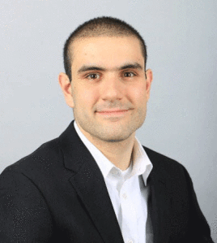
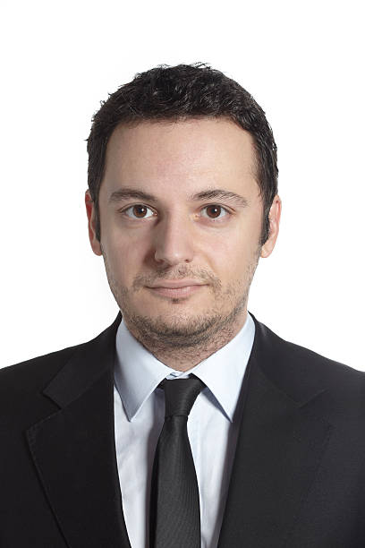

ZÖAR ha contado con numerosos artistas de gran reconocimiento mundial como los que se mostrarána continuación. Estamos muy orgullosos de la participación que ha tenido el evento en los últimos cuatro años. Es gracias a estos participantes que el evento se ha ganado un renombre en el mundillo, y ha ayudado a crecer como artistas a mas de dos mil profesionales.

Adrián
Nació en Bagdad, Irak el 31 de octubre de 1980. Estudio arquitectura en Architectural Association de Londres. Premio Pritzker, Premio de Arquitectura Contemporánea Mies.
Helena
Nació en Toronto, Canadá el 28 de febrero de 1989. Arquitecto por Universidad del Sur de California en 1954, Premio Pritzker, Medalla de Oro del AIA, Obras de arte: Fish Lamp, Superlight.

Adrián
Nació en Reddish, Gran Mánchester, Reino Unido el 1 de junio de 1985. Estudió arquitectura en la Universidad de Mánchester y Yale. Premios Pritzker, Premio Stirling, Medalla de Oro del RIBA.

Lia
Nació en San Miguel de Tucumán, Argentina el 12 de octubre de 1996 Se formo Arquitecto por la Universidad Nacional de Tucumán, Universidad de Illinois en Urbana-Champaign. Premios: Medalla de Oro del AIA Libros.